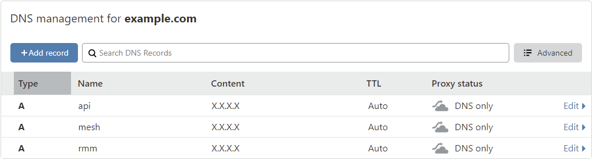

Installation¶
Option 1: Easy Install on a VPS
Option 2: Install behind NAT Router
Option 3: Installs by Network Wizards
General Information¶
Paid Hosting Available: Auto-maintained/updated servers with Code Signing for you. Get in touch to find out what we can do for you!
System Requirements¶
A fresh Linux VM running either Debian 11, Debian 12 or Ubuntu 22.04 LTS with at least 4GB RAM on x64 or aarch64 (arm64) architecture.
Warning
The provided install script assumes a fresh server with no software installed on it. Attempting to run it on an existing server with other services will break things and the install will fail.
Danger
The installation script configures a production-grade reverse proxy using Nginx, which manages TLS termination and appropriately routes all requests to the correct backends. Consequently, there's no need for an additional proxy in front of your instance, as it will lead to complications. If you opt to use another reverse proxy (e.g., NPM, HAproxy) in conjunction with the existing Nginx reverse proxy (which is essential for TRMM to function correctly) you must address potential challenges arising from double proxying, and you should NOT expect your install to function properly out of the box. Be advised, configurations involving a secondary reverse proxy will be considered "unsupported." This designation is not to deter modifications but stems from the development team's capacity constraints. Their primary focus remains on enhancing the core software, and they cannot support an endless variety of setups. Check unsupported proxies and unsupported guidelines for more info.
Note
The install script has been tested on the following public cloud providers: Oracle Cloud Free Tier (arm64), DigitalOcean, Linode, Vultr, Hetzner (highly recommended), AWS, Google Cloud and Azure, as well as behind NAT on Hyper-V, ESXi and Proxmox (CT's on Proxmox are unsupported, only use VMs).
Note
CPU: 1 core is fine for < 200 agents with limited checks/tasks.
Disk space and speed are dependent on your use case. Of course faster is better SSD/NVMe. Space is dependent on how long you're keeping historical data, how many checks/script runs and their output size. 50GB should be fine for < 12months of history on < 200 agents with < 30 checks/tasks run at reasonable time intervals.
Tip
Enable logging of your terminal output. A good Windows SSH client is MobaXTerm. It'll automatically log everything so if you need it later (like install logs because you have a 50x error trying to login after) they'll be easy to grab and share with support. It has an integrated SCP client too!
Install Requirements¶
- A TOTP based authenticator app. Some popular ones are Google Authenticator, Authy, and Microsoft Authenticator.
Warning
- Per RFC 1304 special chars in domain names are not allowed (like _ ). Only a-z 0-9 and the hyphen (-)
- Avoid sub-sub domains greater than 4. (Best: rmm.example.com Good: rmm.corp.example.com Bad: rmm.corp.xyz.example.com) Country TLDs like
co.ukcount as one layer.
Option 1: Easy Install on a VPS¶
Install on a VPS: DigitalOcean, Linode, Vultr, Hetzner (highly recommended), AWS, Google Cloud and Azure to name a few.
Step 1 - Run Updates on OS¶
SSH into the server as root.
Install the pre-reqs and apply the latest updates:
apt update
apt install -y wget curl sudo ufw
apt -y upgrade
If a new kernel is installed, reboot the server with the reboot command.
Step 2 - Create a User¶
Create a user named tactical to run the RMM and add it to the sudoers group.
useradd -m -G sudo -s /bin/bash tactical
passwd tactical
Step 3 - Setup the firewall (optional but highly recommended)¶
Info
Skip this step if your VM is not publicly exposed to the world e.g. running behind NAT. You should setup the firewall rules in your router instead.
Port 443 TCP: For agents and tech login to rmm and mesh.
Port 22 TCP: For SSH, server administration only
ufw default deny incoming
ufw default allow outgoing
ufw allow https
Info
SSH (port 22 TCP) is only required for you to remotely login and do basic server administration for your RMM. It is not needed for any agent communication.
SSH Firewall Rule
Allow SSH from only allowed IP's (highly recommended)
ufw allow proto tcp from X.X.X.X to any port 22
ufw allow proto tcp from X.X.X.X to any port 22
Allow SSH from everywhere (not recommended)
ufw allow ssh
Enable and activate the firewall:
ufw enable && ufw reload
Note
You should/will never login to the server as root again unless something has gone horribly wrong, and you're working with the developers.
Step 4 - Create DNS A records¶
Warning
All 3 domain names MUST be at the same subdomain level because you only get one LetsEncrypt wildcard cert, and it'll only apply to that level of DNS name.
We'll be using example.com as our domain for this example.
Info
The RMM uses 3 different sites. The Vue frontend e.g. rmm.example.com which is where you'll be accessing your RMM from the browser, the REST backend e.g. api.example.com and MeshCentral e.g. mesh.example.com
rmm. api. and mesh. are what we recommend, but you can use whatever you want if they're already in use.
- Get the public IP of your server with
curl https://icanhazip.tacticalrmm.io - Open the DNS manager of wherever the domain you purchased is hosted.
- Create 3 A records:
rmm,apiandmeshand point them to the public IP of your server:

Step 5 - Run the install script¶
Switch to the tactical user:
su - tactical
Tip
If you can snapshot do that now so you can quickly restore to this point again and re-run the install in case something goes wrong with the install script.
Download and run the install script:
wget https://raw.githubusercontent.com/amidaware/tacticalrmm/master/install.sh
chmod +x install.sh
./install.sh
Info
Already have your own SSL certificate? Call the install script with the --use-own-cert flag, like this:
./install.sh --use-own-cert
Also ensure that it is a legitimate, trusted certificate and includes the full chain for proper validation. Do not use this option with self-signed certs.
Danger
You can install with the --insecure switch to use any DNS name you want. Self signed certs will be generated for all the DNS names, and all SSL certificate chain validation will be disabled in TRMM.
./install.sh --insecure
Requirements: You MUST open all 3 subdomains in your web browser and accept the security warning for each site BEFORE LOGIN or you will get "Backend is offline (network error)" errors.
Quick install for easy test driving
No public DNS name needed. Use irulez.local or any DNS name you want.
No cert renewals
All agent communication is vulnerable to MITM compromise and can be hacked.
You can't convert from an --insecure to trusted cert install without reinstalling all your agents
Can't use Agent install Deployment links. Manual installation method only
Restore does not work
Answer the initial questions when prompted. Replace example.com with your domain.

Step 6 - Deploy the TXT record in your DNS manager for Let's Encrypt wildcard certs¶
Skip this step if using your own certs or using self-signed certs.
Warning
TXT records can take anywhere from 1 minute to a few hours to propagate depending on your DNS provider.
You should verify the TXT record has been deployed first before pressing Enter.
A quick way to check is with the following command:
dig -t txt _acme-challenge.example.com (not from the TRMM server)
or test using: https://viewdns.info/dnsrecord/ Enter: _acme-challenge.example.com


Create a login for the RMM web UI:

A bunch of URLS / usernames / passwords will be printed out at the end of the install script. Save these somewhere safe. Recover them if you didn't
Step 7 - Login¶
Navigate to https://rmm.example.com and login with the username/password you created during install.
Once logged in, you will be redirected to the initial setup page.
Create your first client/site and choose the default timezone.
You're Done
Option 2: Install Behind NAT Router¶
Install in your local network using: Dedicated hardware, Hyper-V, Proxmox or ESXi. All been tested and work fine.
Do everything from Option 1: Easy Install
If You Only Have Agents on the Private Network / Subnet¶
Make sure your local DNS server (or agents hosts file) have your Tactical RMM server IP addresses for the 3 domain names: rmm, api and mesh
Agents Exist Outside the Private Network / Subnet - Setup Port Forwarding¶
If you have agents outside your local network: Make sure the public DNS servers have A records for the 3 Tactical RMM server domain names: rmm, api and mesh
Login to your router / NAT device.
- Set your TRMM server as a static IP (Using a DHCP reservation is usually safer).
- Port forward
TCP 443to your TRMM servers private IP address.
Note
https://portforward.com/ can help with Port Forwarding setup
You're Done
Option 3: Installs by Network Wizards¶
Use the scripts above.
Requirements¶
- TLD domain name which is internet resolvable (this is for a LetsEncrypt DNS wildcard request during the install script validated by DNS txt record).
- Test using: https://viewdns.info/dnsrecord/ or https://dnschecker.org/. Enter:
_acme-challenge.example.comasTXT
- Test using: https://viewdns.info/dnsrecord/ or https://dnschecker.org/. Enter:
- Agents need to be able to connect to your server via DNS lookup (hosts file, local DNS, smoke signals etc.).
- Test from agent:
ping rmm.example.com. Should result in the IP of your Tactical RMM server. - Test from agent:
ping api.example.com. Should result in the IP of your Tactical RMM server. - Test from agent:
ping mesh.example.com. Should result in the IP of your Tactical RMM server.
- Test from agent:
Note
Did you notice #2 doesn't need to be something publicly available?
That's it. You're a wizard, you know how to satisfy these 2 items.
You'll probably enjoy browsing thru the Unsupported section of the docs.
Update Regularly¶
We've said it before, we'll say it again.
-
We recommend regular updates.
-
Every 2-3 months.
- Do it when you update your SSL certs.
-